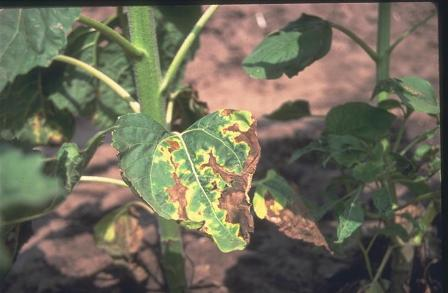
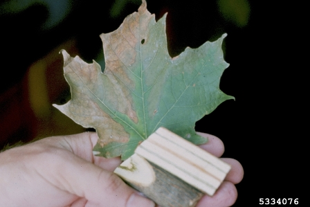
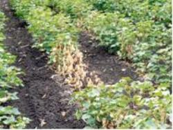
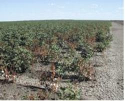

COTTON :: MAJOR DISEASE :: VERTICILLIUM WILT
Verticillium wilt - Verticillium dahliae
Symptoms
The symptoms are seen when the crop is in squares and bolls. Plants infected at early stages are severely stunted. The first symptoms can be seen as bronzing of veins. It is followed by interveinal chlorosis and yellowing of leaves. Finally the leaves begin to dry, giving a scorched appearence. At this stage, the characteristic diagnostic feature is the drying of the leaf margins and areas between veins, which gives a “Tiger stripe” or “Tiger claw” appearance.
The affected leaves fall off leaving the branches barren. Infected stem and roots, when split open, show a pinkish discolouration of the woody tissue which may taper off into longitudinal streaks in the upper parts and branches. The infected leaf also shows brown spots at the end of the petioles. The affected plants may bear a few smaller bolls with immature lint.
.
|  |  |
 |
|---|---|---|
Verticillium dahliae - Symptoms 1 |
Verticillium dahliae - Symptoms 2 |
Verticillium dahliae - Symptoms 3 |
Pathogen
The fungus produces hyaline, septate mycelium and two types of spores. The conidia are single celled, hyaline, spherical to oval, borne singly on verticillate condiophores. The micro sclerotia are globose to oblong, measuring 48-120 X 26-45um.
Favourable Conditions
- Low temperature of 15-20˚C,
- Low lying and ill-drained soils,
- Heavy soils with alkaline reaction
- Heavy doses of nitrogenous fertilizers.
Disease Cycle
The fungus also infects the other hosts like brinjal, chilli, tobacco and bhendi. The
fungus can survive in the infected plant debris and in soils as micro sclerotia upto 14 years. The seeds also carry the micro sclerotia and conidia in the fuzz. The primary spread is through the micro sclerotia or conidia in the soil. The secondary spread is through the contact of diseased roots to healthy ones and through dissemination of infected plant parts through irrigation water and other implements.
|  |  |
|---|---|
| Fusarium oxysporum f.sp. vasinfectum - Macro and microconidia 1 | Fusarium oxysporum f.sp. vasinfectum - Macro and microconidia 2 |
Management
- Treat the delinted seeds with Carboxin or Carbendazim at 2 g/kg.
- Remove and destroy the infected plant debris after deep ploughing in summer months (June-July).
- Apply heavy doses of farmy and manure or compost at 100t/ha.
- Follow crop rotation by growing paddy or lucerne or chrysanthemum for 2-3 years.
- Spot drench with 0.05g/l benomyl or carbendazim 500mg/l.
- Grow disease resistant varieties like Sujatha, Suvin and CBS 156 and tolerant variety like MCU 5 WT.